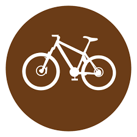

Dia Mundial de la Bicicleta
Foto del perfil
Banner Conmemorativo


Banner Conmemorativo

En países europeos como España, Dinamarca, Polonia, Holanda y Francia, y en algunos asiáticos como China, la bicicleta es un medio de transporte muy común entre sus habitantes. Y es que se cree que alrededor del mundo, 800 millones de bicicletas ruedan cada día, con ventajas no sólo para las personas sino para el cuidado del medio ambiente.
Ventajas para tu salud
Los diferentes diseños de las bicicletas están basados en su funcionalidad: para que tipo de terreno, desarrollo de velocidad, menor peso o mayor fortaleza, etc. Vamos dar las características de los más usuales para ayudarte a elegir la bicicleta que mejor se adapte a tu persona y necesidades.
El 19 de abril de 1943, el químico suizo Albert Hofmann realizó un auto experimento para determinar los efectos de la dietilamida de ácido lisérgico (LSD). Hofmann ingirió deliberadamente 0,25 miligramos (250 microgramos) de la sustancia —tres días antes, el 16 de abril, lo había hecho en forma accidental mientras manipulaba la sustancia, descubriendo así sus poderosos efectos—, cantidad que consideró por entonces una dosis mínimamente efectiva (esa dosis está fijada hoy en los 20 microgramos). Menos de una hora después, Hofmann experimentó intensas y repentinas alteraciones de la percepción. Pidió a su ayudante de laboratorio que lo escoltara hasta su casa; como el uso de vehículos motorizados estaba prohibido a causa de las restricciones impuestas por la guerra, debieron hacer el viaje en bicicleta. En el camino, las condiciones de Hofmann se deterioraron rápidamente: veía a su vecina de al lado como una bruja, pensaba que se estaba volviendo loco, y creía que el LSD lo había envenenado. Sin embargo, cuando su médico de cabecera lo examinó, no detectó ninguna anormalidad física, excepto por un par de pupilas increíblemente dilatadas. Hofmann fue estabilizado, y pronto su pánico comenzó a dar paso a una sensación de fortuna y disfrute. Él mismo lo describió así:
“Poco a poco comencé a disfrutar de una sucesión de colores y formas sin precedentes, aun con mis ojos cerrados. Fantásticas imágenes caleidoscópicas surgían en mí, alternantes, variadas, se abrían y cerraban en círculos y espirales, y explotaban como fuentes de color, se reordenaban y mezclaban en un flujo constante...”
Albert Hofmann
Los eventos del primer viaje de LSD, conocido hoy como «el Día de la Bicicleta», después de su vuelta a casa en bicicleta, probaron a Hofmann que había hecho un descubrimiento significativo: una sustancia psicoactiva con una potencia extraordinaria, capaz de provocar alteraciones de la conciencia significativas con una dosis extremadamente pequeña. Hofmann visionó la droga como una potente herramienta psiquiátrica; debido a su naturaleza introspectiva, no imaginó jamás a nadie utilizándola de forma recreacional.


 1
1 2
2 3
3 4
4 5
5 6
6 7
7 8
8